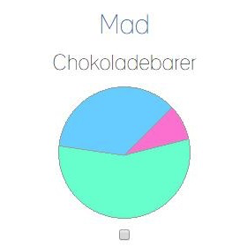
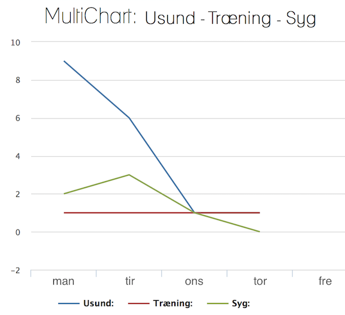

På vores side kan du tracke forskellige ting fra din hverdag.
Alt ligefra nusning af sin kat, til hvordan ens sygdom hænger sammen med antal af busture.
Et andet eksempel kunne være, at man var interesseret i at vide hvor mange chokoladebarer man spiser.
Eksempel:
Du skulle nu gerne have fået et diagram over dit chokoladebar forbrug
Tillykke du har lavet din første tracker!
Du kan slette HELE tracken, ved at klikke på skraldespanden
eller tilføje nye oplysninger til din tracker, ved at klikke på overskriften:
Inde på din specifikke track kan du tilføje nye informationer & se din statistik.
Jo oftere du indtaster de nyeste informationer, jo mere præcist vil dit overblik blive:
For at sammenligne dine statistikker,
f.eks for at vurdere hvorvidt et af dine trackede adfærdsmønstre påvirker
- eller på anden vis hænger sammen med et andet adfærdsmønster,
så kan du krydse de pågældende tracks af i checkboxen, nederst i hver trackkasse.
Alle afkrydsede trackstatistikker vil dukke op i et fælles diagram nederst på siden, og du vil nu kunne se om nogle af oplysningerne har en sammenhæng:
OBS!: Alle oplysninger bliver selvfølgelig behandlet med den største fortrolighed, og ingen informationer vil blive videregivet!